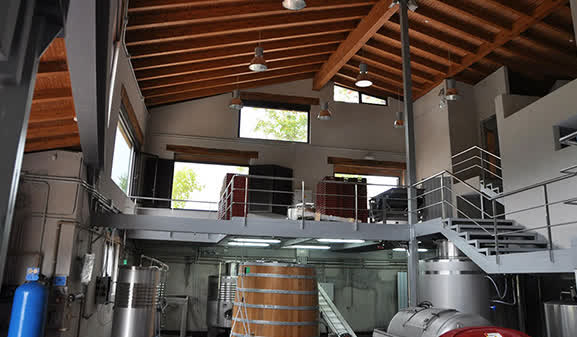
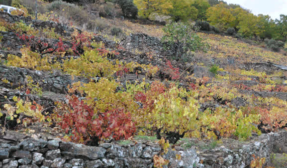

Conoce nuestra historia, nuestro equipo y la filosofía que guía cada paso, desde el viñedo hasta la botella.

Ronsel do Sil, S.L. se fundó en 2010 en Parada de Sil (Ourense), en el corazón de la Ribeira Sacra. El nombre Ronsel hace referencia a la estela que deja un barco al navegar por el agua: la huella de pasión y respeto por el paisaje sostenible y la cultura del vino.
La bodega ocupa un antiguo lagar restaurado a orillas del río Sil, donde se combina la tradición vitivinícola gallega con instalaciones modernas de elaboración.
Desde el primer día, el objetivo ha sido ensalzar las variedades autóctonas de la Ribeira Sacra mediante una elaboración artesanal cuidada, respetando el terroir y la expresión de cada cosecha.
Una familia dedicada al viñedo, la elaboración y la gestión, con pasión por la Ribeira Sacra.
Impulsor del proyecto Ronsel do Sil. Su visión de poner en valor las variedades autóctonas de la Ribeira Sacra dio origen a la bodega en 2010.
Responsable de la viticultura y la elaboración. Quien recibe a los visitantes y les transmite con pasión cada detalle de la bodega y el viñedo.
Encargado de la gestión, la administración y la coordinación comercial de la bodega.

Ronsel do Sil cultiva dos hectáreas de viñedo (propio y arrendado) en las empinadas laderas sobre el río Sil, en la subzona Ribeiras do Sil de la D.O. Ribeira Sacra.
Los viñedos se asientan en bancales de piedra con fuertes pendientes, lo que obliga a realizar toda la labor a mano: poda, tratamientos y vendimia. Esta viticultura de montaña, conocida como viticultura heroica, exige un esfuerzo excepcional pero produce uvas de una calidad y concentración extraordinarias.
Una elaboración artesanal que respeta la expresión de cada variedad y de cada cosecha.
Toda la uva se recoge a mano en los bancales, seleccionando los racimos en el momento óptimo de maduración.
En depósitos de acero inoxidable con temperatura controlada, buscando la máxima expresión frutal y varietal.
Selecciones en barricas de roble francés y americano, donde los vinos ganan complejidad y estructura sin perder su carácter.